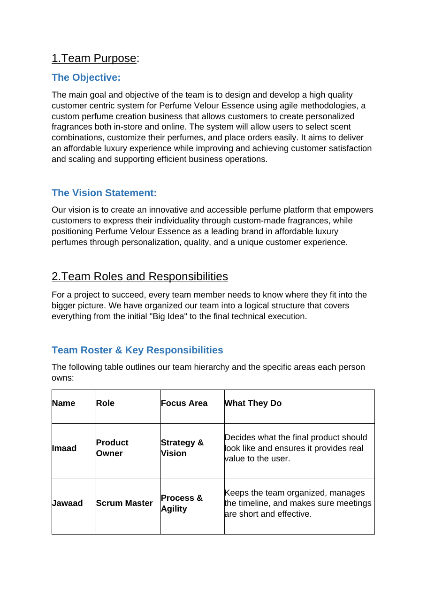
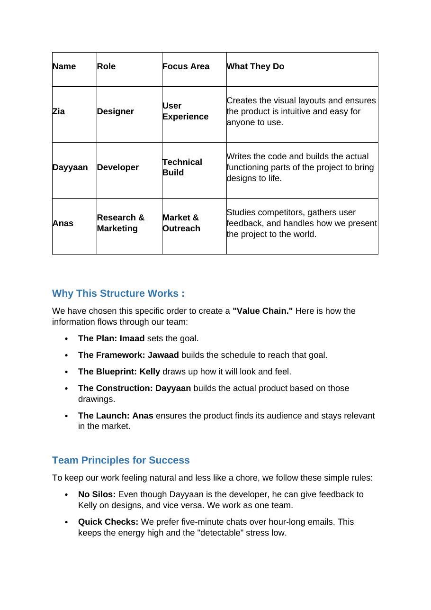
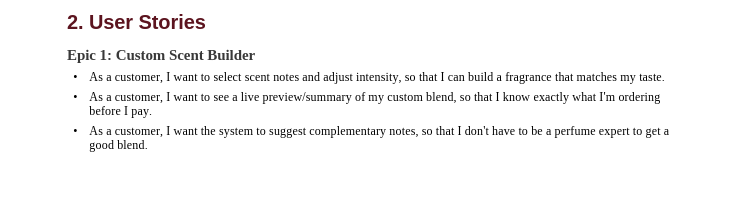
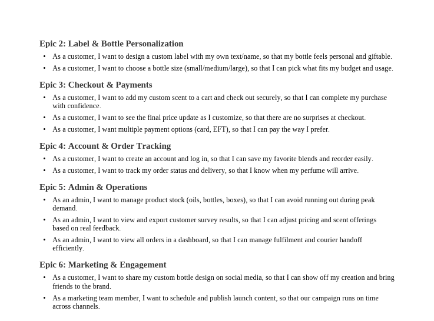
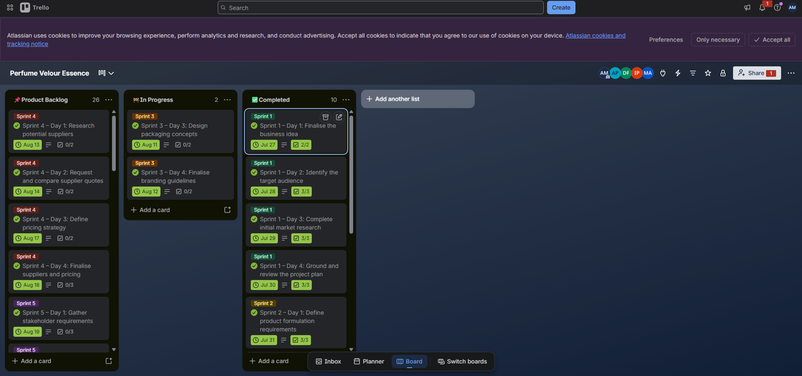
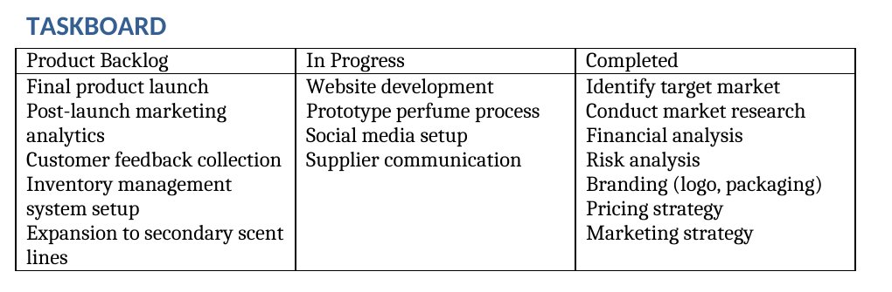
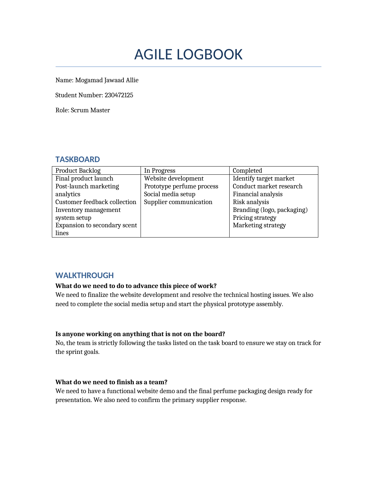
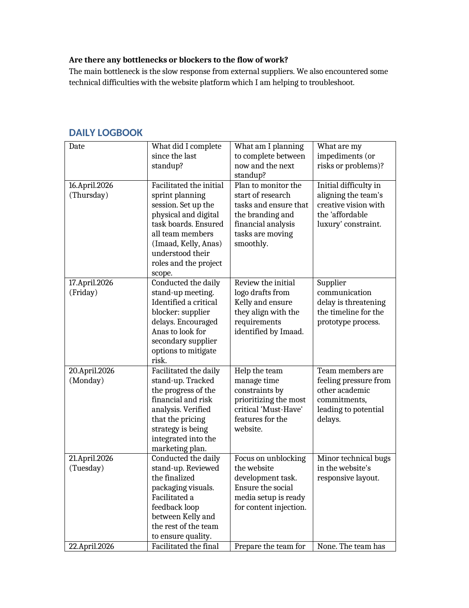
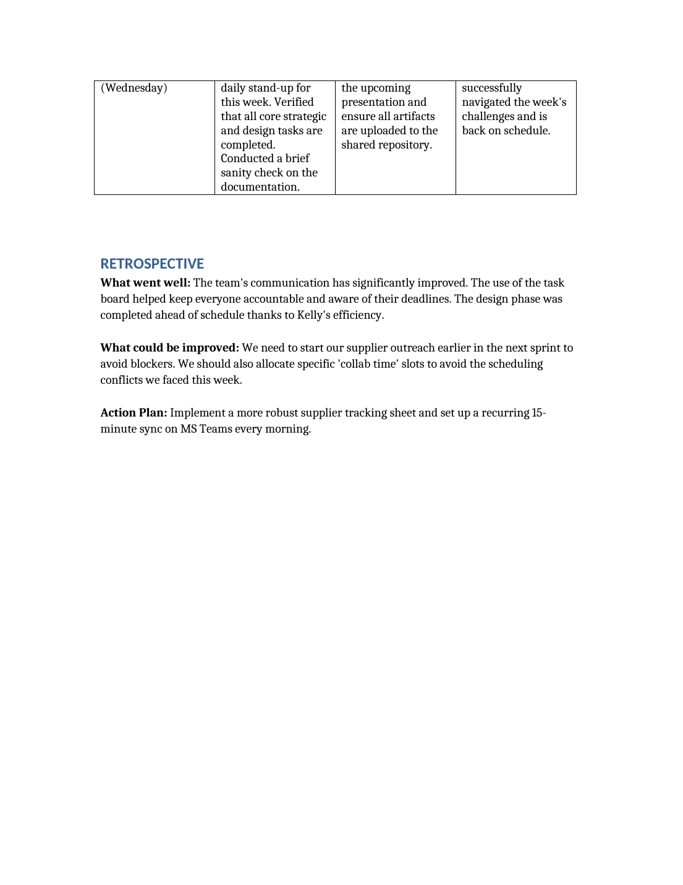

Mogamad Jawaad Allie
Software Developer & Scrum Master
Hardworking and highly adaptable, with experience in education support, IT maintenance, media management and software development at Cape Peninsula University of Technology.
const developer = {
name: "Mogamad Jawaad Allie",
education: "CPUT Diploma in App Development",
skills: ["Java", "JavaScript", "Python", "SQL"],
agileRole: "Scrum Master",
workReady: true
};
function getStatus() {
return "Internship Ready 🚀";
}
Explore my portfolio
Choose a semester, then use the section tabs to move through it.
About Me
Bridging IT support, media and software development
Mogamad Jawaad Allie
ICT Student | CPUT App Development
I am studying for a Diploma in App Development at the Cape Peninsula University of Technology. I am a hardworking and highly adaptable person with experience in education support, IT maintenance, media management and software development, and strong technical aptitude in programming, computer hardware and systems troubleshooting.
Outside the classroom I have worked as a student teacher and IT support assistant, and as a media manager and sound technician. In our Semester 2 Agile project I took the role of Scrum Master, keeping the team organised, managing the timeline and running our daily stand-ups.
Academic & Career Goals
- Complete my diploma and move into a software development role.
- Keep growing my skills in Java, JavaScript, Python and SQL.
- Use my leadership and communication skills in collaborative Agile teams.
Curriculum Vitae
My experience, education and skills
Work Experience
Student Teacher & IT Support Assistant
2025 - 2026Rylands Primary / ORT SA
- Assisted educators with classroom instruction and student supervision, and served as substitute teacher when required.
- Provided IT maintenance and troubleshooting for computer labs and staff devices.
- Installed and configured software and resolved hardware issues.
- Supported students with technical learning tasks.
- Key contribution: maintained the operational efficiency of classroom computer systems while balancing teaching and technical responsibilities.
Media Manager & Sound Technician
2020 - 2026Quwwa-tul-islam
- Managed social media platforms and created digital content.
- Coordinated branding and online presence.
- Set up and operated PA systems, amplifiers, mixers and microphones for events.
- Handled live sound balancing and equipment troubleshooting.
Education
Diploma in App Development
2023 - OngoingCape Peninsula University of Technology (CPUT)
Bachelors
2020 - 2022Al Azhar High School
Islamic Studies and Ethics
2015 - 2019The Leadership College
References
Ma’am Taliep
Rylands Primary School
✉️ admin@rylandsprimary.co.za
📞 +27 63 773 3937
Marzuq Ebrahim (Chairman)
Quwwa tul islam
✉️ quwwatul.islam.za@gmail.com
📞 +27 67 945 9749
Mock Interview Video
Demonstrating my communication skills and readiness for the ICT workplace
Mock Interview Recording
Mock Interview Insights
How I prepared
Preparation
Reviewed common technical interview questions and practised answers within the 2-minute limit.
Presentation
Dressed professionally and set up a clean background so the focus stayed on my answers.
Relevant Experience
Linked my IT support and hardware troubleshooting background to the work of an ICT professional.
This video is evidence of work readiness presentation for the CPUT work readiness training.
STAR Method Reflections
Situation, Task, Action, Result: my learning from Semester 1
Coded CV & Reflections using Markdown
Situation
Developing this digital portfolio required us to build structured web documentation without a traditional visual editor, relying on Markdown formatting.
Task
I needed to code and format my Curriculum Vitae and the structure of my portfolio cleanly using GitHub Flavored Markdown (GFM).
Action
I learned and applied Markdown syntax including headers, nested lists, bold text for emphasis and tables to organise my skills, education and experience.
Result
I produced clean, developer-friendly source files that render well on the web, which strengthened my technical documentation skills.
Mock Interview Video
Situation
As part of our work readiness training, I was tasked with recording a mock interview video to prepare for real-world ICT job interviews.
Task
I needed to respond clearly to interview questions, showing both my technical problem-solving and my interpersonal skills within a strict 2-minute timeframe.
Action
I prepared by reviewing common technical interview questions, dressing professionally, setting up a clean background and practising answers that highlighted my IT support and hardware troubleshooting background.
Result
I produced a concise, confident video that shows my readiness for a professional workplace and gave me valuable practice for my future career.
Deployment on GitHub Pages
Situation
To complete the assignment and make my portfolio accessible to employers, my locally built portfolio needed to be published on the internet.
Task
I was tasked with hosting the project files online using GitHub Pages to create a publicly viewable digital portfolio, and with extending it with my Semester 2 Agile project work.
Action
I set up a Git repository, committed my files (HTML, CSS, JavaScript, my Markdown CV and the evidence documents and images) and pushed the project to GitHub. I then enabled GitHub Pages from the repository settings.
Result
My portfolio is hosted and reachable through a public URL, which shows that I can use version control and deploy and manage web assets on my own.
Agile Team Charter
How our team agreed to work together on the custom perfume project
An Agile team charter is a living, co-created social contract that defines a team's shared purpose, core values, working agreements, and operational boundaries to reduce friction and align daily execution.
Evidence


The full charter also covers team values, agile principles, the communication plan, SMART goals and six sprint milestones.
Download the full charter (.docx)Reflection
Reflection: Agile Team Charter
Situation
Our five-person team was starting the Semester 2 project: building a system for Perfume Velour Essence, a custom perfume business. Before any design or code began, we needed to agree who did what and how we would work together.
Task
As the team's Scrum Master, understand how my role fitted into the project and help agree a charter covering our purpose, roles, values, communication plan and milestones.
Action
We wrote the charter as a team: an objective and vision for an affordable-luxury custom perfume platform, and the roles arranged as a value chain. Imaad (Product Owner) sets the goal, I build the schedule to reach it, Zia designs how it looks and feels, Dayyaan builds it and Anas takes it to market. My role was Process & Agility: keeping the team organised, managing the timeline and making sure meetings are short and effective. We also agreed principles such as No Silos, Quick Checks and Clear Ownership, a communication plan (daily WhatsApp, Trello for tasks, a weekly meeting) and six sprint milestones with SMART goals.
Result
The charter gave me a clear mandate: protect the timeline and keep stand-ups short. It also showed that my schedule sat between the vision and the design and build work, so if I let planning slip, everyone after me would be affected. Later on, our logbook showed scheduling conflicts, so next time I would agree fixed meeting slots in the communication plan from the start.
User Stories and Tasks
Turning the custom perfume idea into customer and admin needs
A user story is a short, simple description of a software feature written from the end-user's perspective. The breakdown is then divided into tasks.
Evidence



Reflection
Reflection: User Stories and Tasks
Situation
We had an idea for a custom perfume platform but no clear list of what it had to do, or for whom. As Scrum Master I needed the team to agree on what to build first so that the sprints stayed realistic.
Task
Capture the requirements as user stories in the "As a… I want… so that…" format, group them into epics, and break the work into tasks the team could track.
Action
As a team we wrote 15 user stories across six epics: Custom Scent Builder, Label & Bottle Personalization, Checkout & Payments, Account & Order Tracking, Admin & Operations, and Marketing & Engagement. The work was then broken into tasks on our Trello board as sprint day cards with due dates and checklists. During stand-ups I used the stories to help the team prioritise the most critical "Must-Have" website features when time was short.
Result
The stories gave the team one shared list of what "done" meant, which made prioritising easier than arguing over features. Writing the "so that" part of each story showed me that every feature should be justified by the value it gives a customer or an admin. Breaking the epics into small day cards also made progress visible on the board.
Product Backlog
The prioritised list of work still needed for the product
A product backlog is a prioritized list of all required work, features, bug fixes, and improvements needed for a product.
Evidence

Reflection
Reflection: Product Backlog
Situation
Our project had a lot of work still ahead, from supplier research and pricing to the final launch, and the team needed one place that showed what was waiting and in what order.
Task
As Scrum Master, help keep the product backlog current and ordered so the team always knew what would be picked up next.
Action
We held the backlog in two places. On my logbook taskboard the Product Backlog column listed the later items: final product launch, post-launch marketing analytics, customer feedback collection, inventory management system setup and expansion to secondary scent lines. On Trello the Product Backlog list held the upcoming sprint day cards, such as the Sprint 4 supplier research, quote comparison and pricing cards, each with a due date and a checklist. As work started, cards moved across to In Progress and then Completed.
Result
Keeping the backlog visible meant nobody had to ask what was next. The ordering showed that supplier work needed to start early, which matched the supplier delays I recorded in my logbook. The lesson I took away is that a backlog is only useful if it is reviewed regularly, so that the order stays in line with what the business needs.
Sprint Backlog
The work the team committed to inside each sprint
A Sprint Backlog is a real-time, actionable plan created by and for developers that outlines the specific work needed to achieve the sprint goal.
Evidence
Reflection
Reflection: Sprint Backlog
Situation
Each sprint needed a clear, small set of tasks the team could finish in time, and everyone had to see what was in progress at any moment.
Task
As Scrum Master, help the team plan each sprint on the Trello board and track the day cards through to completion.
Action
The work was split into sprint-labelled day cards, for example "Sprint 1 – Day 1: Finalise the business idea" and "Sprint 3 – Day 3: Design packaging concepts". Each card has a due date and a checklist, and moved from the backlog to In Progress to Completed. The Sprint 1 and Sprint 2 cards are completed with their checklists ticked off, while the Sprint 3 packaging and branding cards were in progress. In my stand-ups I checked the board against what people said they were working on.
Result
The sprint cards made it easy to see what the team had finished and what was still open. The board and our stand-ups showed the same picture, which is what I wanted as Scrum Master. For future sprints I would add owners on each card so that responsibility is just as visible as progress.
Agile Logbook
My daily stand-up entries as Scrum Master, with the walkthrough and sprint retrospective
An agile logbook is a tracking tool used by project managers and development teams to record daily stand-ups, sprint plans, and retrospective notes.
Evidence



Download my full logbook, or the team logbook with the standup entries for 14 to 17 July 2026.
My logbook (.docx) Team logbook (.pdf)Reflection
Reflection: Agile Logbook
Situation
Over one working week the team had to stay aligned while the website, prototype and supplier work were all moving at once. As Scrum Master I was responsible for keeping everyone in step.
Task
Record a daily stand-up entry covering what I completed, what I planned next and what was blocking me, and finish the sprint with a retrospective.
Action
On 16 April I facilitated sprint planning and set up the physical and digital task boards. On 17 April I identified supplier delays as a critical blocker and encouraged Anas to look for secondary suppliers. On 20 April I tracked the financial and risk analysis and helped the team prioritise the Must-Have website features. On 21 April I reviewed the packaging visuals and focused on unblocking website development. On 22 April I ran the final stand-up of the week. The sprint ended with a retrospective: what went well, what could be improved and an action plan.
Result
The impediments I logged moved from supplier delays and time pressure to "None" by 22 April, so writing them down daily helped us deal with them early. The retrospective gave us two clear actions: start supplier outreach earlier, and add a recurring 15-minute morning sync on MS Teams. The main lesson for me is that a Scrum Master's job is mostly to remove blockers, and a daily log makes that visible.